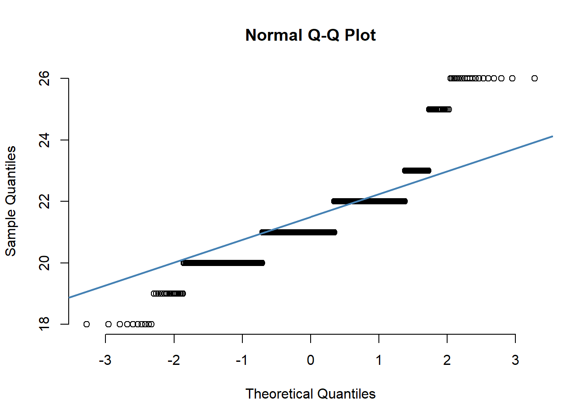
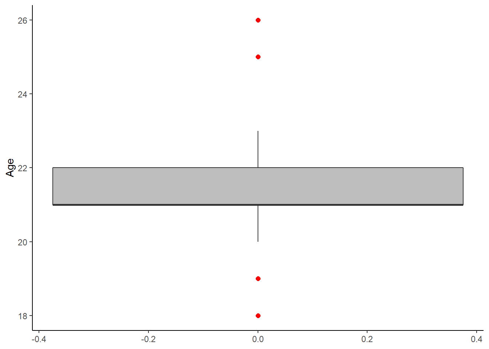
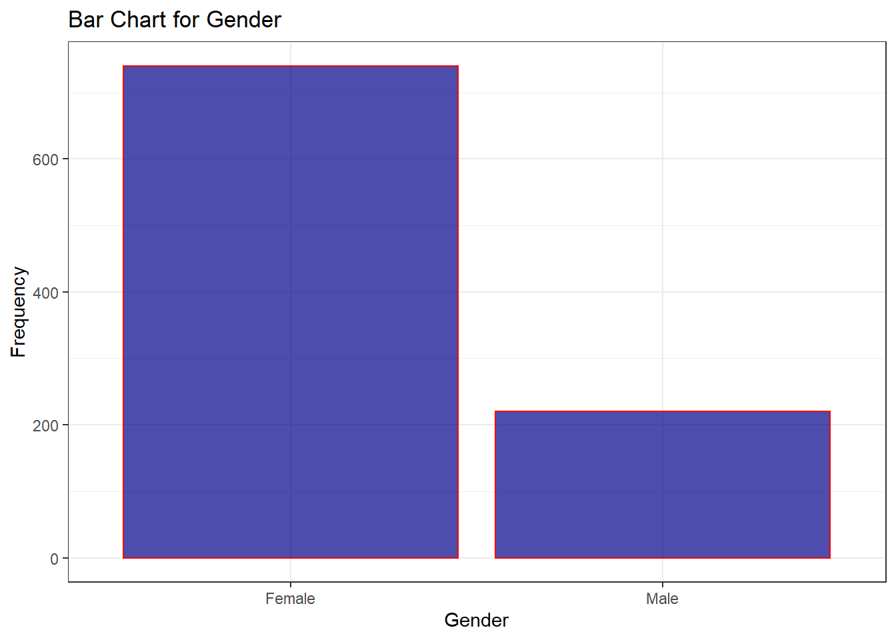
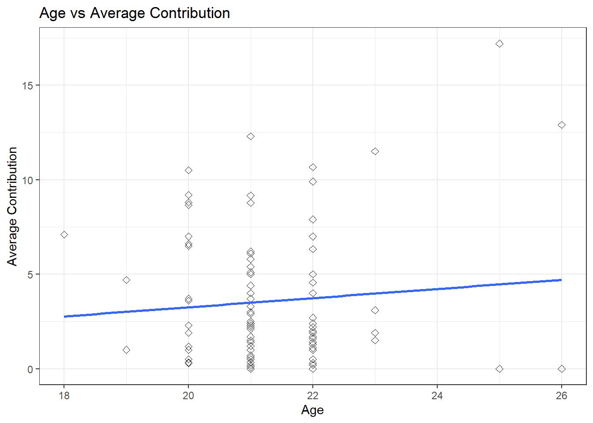
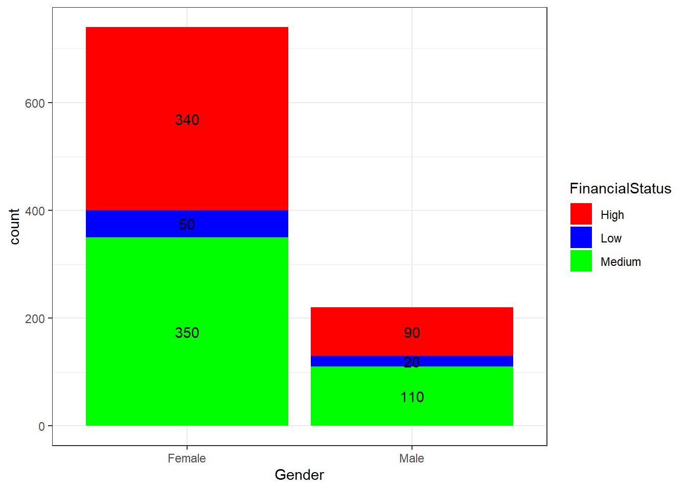
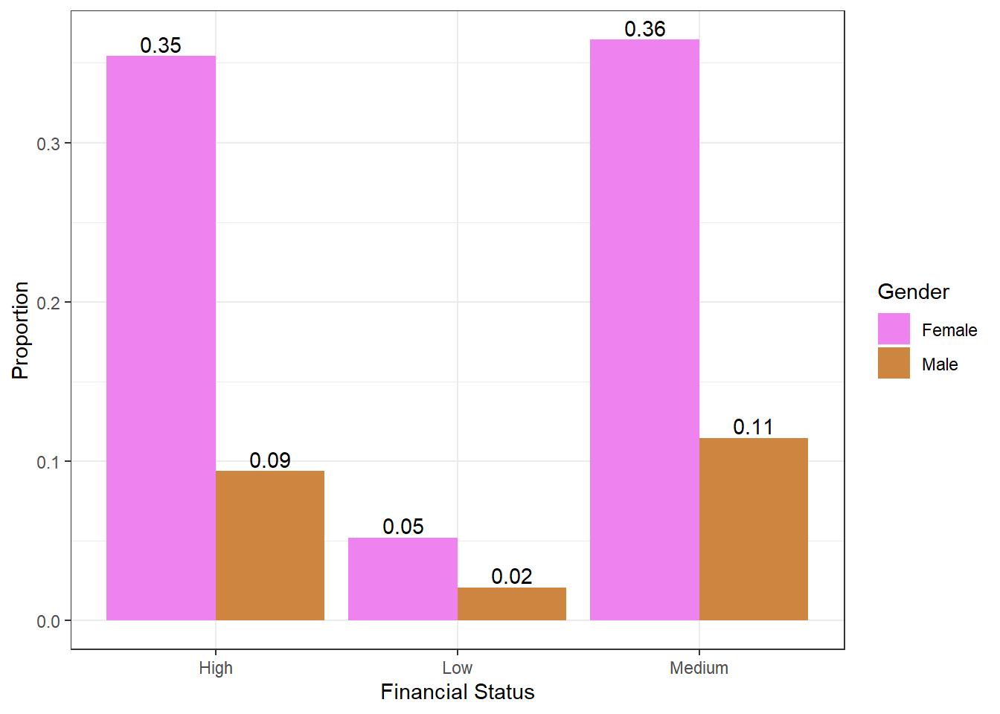
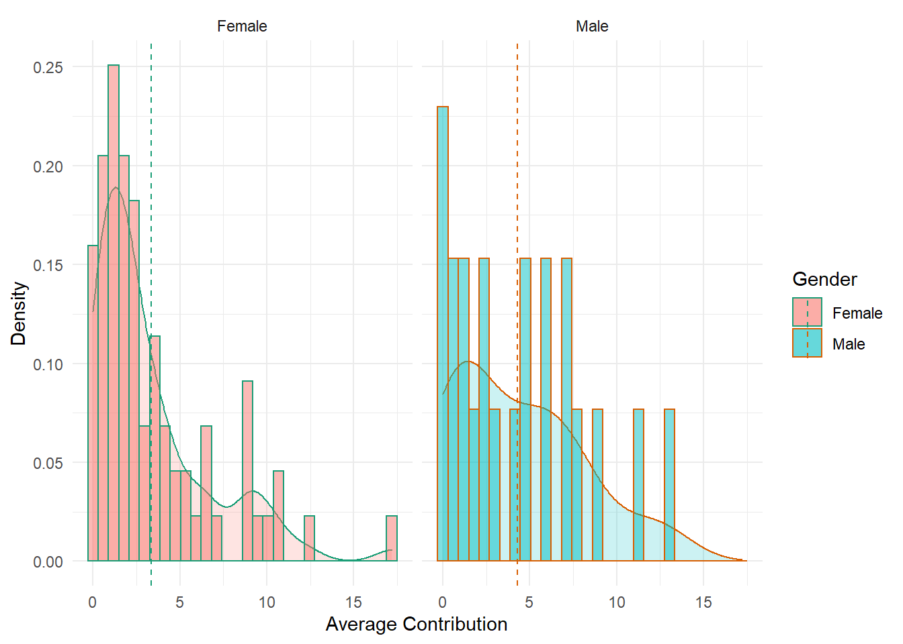
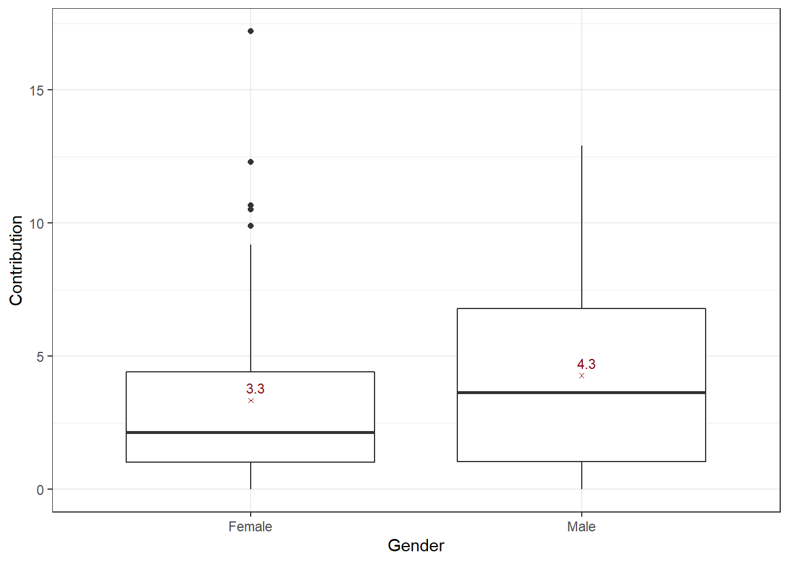
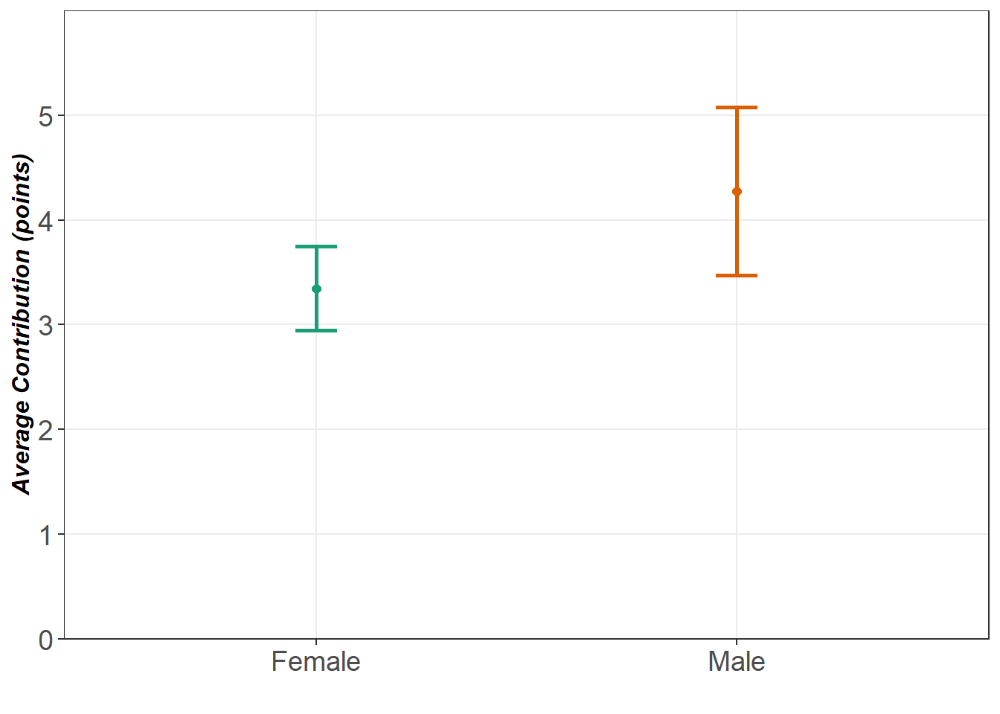

Visualizations and Summary Statistics
# Load needed packages
library(openxlsx)
library(tidyverse)# Read Data
data <- read.xlsx("Long Data.xlsx",1)Overall Summary of Data
# Show the dimensions of the data frame by row and column
dim(data)## [1] 960 29# Show the structure of the dataframe
str(data)## 'data.frame': 960 obs. of 29 variables:
## $ Date : num 43289 43289 43289 43289 43289 ...
## $ Session : num 1 1 1 1 1 1 1 1 1 1 ...
## $ Subject.ID : num 1 2 3 4 5 6 7 8 9 10 ...
## $ Group : num 1 1 1 1 2 2 2 2 3 3 ...
## $ Scenario1 : chr "X" "X" "X" "X" ...
## $ Scenario2 : chr "Y" "X" "Y" "Y" ...
## $ Scenario3 : chr "Y" "Y" "X" "X" ...
## $ Scenario4 : chr "X" "Y" "Y" "X" ...
## $ Scenario5 : chr "Y" "Y" "X" "X" ...
## $ Scenario6 : chr "Y" "Y" "X" "X" ...
## $ Scenario7 : chr "Y" "Y" "Y" "X" ...
## $ Scenario8 : chr "Y" "Y" "Y" "X" ...
## $ Treatment : chr "Control" "Control" "Control" "Control" ...
## $ Gender : chr "Male" "Female" "Female" "Female" ...
## $ Age : num 21 20 22 20 23 22 22 21 21 21 ...
## $ Religion : chr "Muslim" "Muslim" "Christian" "Muslim" ...
## $ Residence : num 2 2 2 2 2 2 2 2 2 2 ...
## $ Profit : num 53.1 52.6 50.6 48.6 52.4 ...
## $ FinancialStatus : chr "Medium" "High" "Medium" "Medium" ...
## $ ID : chr "1" "2" "3" "4" ...
## $ Group_ID : chr "1" "1" "1" "1" ...
## $ Period : chr "1" "1" "1" "1" ...
## $ Contribution : num 0 0 0 10 8 0 2 5 5 0 ...
## $ ReceivePride : chr NA NA NA NA ...
## $ SubTotal : num 24 24 24 14 18 26 24 21 20.6 25.6 ...
## $ ProfitGroupAccount: num 4 4 4 4 6 6 6 6 5.6 5.6 ...
## $ GroupContribution : num 10 10 10 10 15 15 15 15 14 14 ...
## $ Rank : num NA NA NA NA NA NA NA NA NA NA ...
## $ id : num 1 2 3 4 5 6 7 8 9 10 ...# Transforming Data has converted some factor variables into characters!# Some quick fixes from the tidying step
Convert_to_factor <- c("ID","Group_ID","Religion","Gender","Treatment","Residence","FinancialStatus", "ReceivePride", "Period")
scenarios <- grep("Scenario",names(data))
data[,Convert_to_factor] <- lapply(data[,Convert_to_factor], factor)
data[,scenarios] <- lapply(data[,scenarios], factor)# Show summary statistics on the columns of the data frame
summary(data)## Date Session Subject.ID Group Scenario1
## Min. :43289 Min. :1.0 Min. : 1.00 Min. : 1.00 X:560
## 1st Qu.:43289 1st Qu.:1.0 1st Qu.:12.75 1st Qu.: 3.75 Y:400
## Median :43290 Median :1.5 Median :24.50 Median : 6.50
## Mean :43290 Mean :1.5 Mean :24.50 Mean : 6.50
## 3rd Qu.:43290 3rd Qu.:2.0 3rd Qu.:36.25 3rd Qu.: 9.25
## Max. :43290 Max. :2.0 Max. :48.00 Max. :12.00
##
## Scenario2 Scenario3 Scenario4 Scenario5 Scenario6 Scenario7 Scenario8
## X:490 X:520 X:460 X:600 X:580 X:520 X:410
## Y:470 Y:440 Y:500 Y:360 Y:380 Y:440 Y:550
##
##
##
##
##
## Treatment Gender Age Religion Residence
## Control:480 Female:740 Min. :18.00 Christian: 40 1: 60
## Pride :480 Male :220 1st Qu.:21.00 Muslim :920 2:900
## Median :21.00
## Mean :21.27
## 3rd Qu.:22.00
## Max. :26.00
##
## Profit FinancialStatus ID Group_ID Period
## Min. :25.00 High :430 1 : 10 1 : 40 1 : 96
## 1st Qu.:50.61 Low : 70 10 : 10 10 : 40 10 : 96
## Median :54.00 Medium:460 11 : 10 11 : 40 2 : 96
## Mean :53.31 12 : 10 12 : 40 3 : 96
## 3rd Qu.:58.00 13 : 10 13 : 40 4 : 96
## Max. :78.00 14 : 10 14 : 40 5 : 96
## (Other):900 (Other):720 (Other):384
## Contribution ReceivePride SubTotal ProfitGroupAccount
## Min. : 0.000 N :275 Min. : 8.80 Min. : 0.000
## 1st Qu.: 0.000 Y :201 1st Qu.:20.00 1st Qu.: 1.200
## Median : 1.000 NA's:484 Median :21.20 Median : 4.000
## Mean : 3.486 Mean :22.08 Mean : 5.549
## 3rd Qu.: 5.000 3rd Qu.:24.00 3rd Qu.: 8.000
## Max. :20.000 Max. :43.20 Max. :27.200
## NA's :52 NA's :52 NA's :52
## GroupContribution Rank id
## Min. : 0.00 Min. :1.00 Min. : 1.00
## 1st Qu.: 3.00 1st Qu.:1.75 1st Qu.:24.75
## Median :10.00 Median :2.50 Median :48.50
## Mean :13.87 Mean :2.50 Mean :48.50
## 3rd Qu.:20.00 3rd Qu.:3.25 3rd Qu.:72.25
## Max. :68.00 Max. :4.00 Max. :96.00
## NA's :52 NA's :484# Shows the name of each column in the data frame
names(data)## [1] "Date" "Session" "Subject.ID"
## [4] "Group" "Scenario1" "Scenario2"
## [7] "Scenario3" "Scenario4" "Scenario5"
## [10] "Scenario6" "Scenario7" "Scenario8"
## [13] "Treatment" "Gender" "Age"
## [16] "Religion" "Residence" "Profit"
## [19] "FinancialStatus" "ID" "Group_ID"
## [22] "Period" "Contribution" "ReceivePride"
## [25] "SubTotal" "ProfitGroupAccount" "GroupContribution"
## [28] "Rank" "id"Univariate Analysis
Age (continuous)
# Summary stats
summary(data$Age)## Min. 1st Qu. Median Mean 3rd Qu. Max.
## 18.00 21.00 21.00 21.27 22.00 26.00# Histogram
ggplot(data, aes(x=Age)) +
geom_histogram(color="darkblue", fill="lightblue", alpha=0.5,binwidth=1)+
labs(title="Histogram for Age", x="Age", y="Count")+
theme_classic()# Histogram with density plot
ggplot(data, aes(x=Age)) +
geom_histogram(aes(y=..density..), binwidth=1,
colour="black", fill="white")+
geom_density(alpha=.2, fill="#FF6666") +
labs(title="Histogram with Density Curve for Age", x="Age", y="Percent")+
scale_y_continuous(limits=c(0,1), labels = scales::percent)+
theme_classic()
# Q-Q plot
qqnorm(data$Age, pch = 1, frame = FALSE)
qqline(data$Age, col = "steelblue", lwd = 2)
# Single boxplot
ggplot(data, aes(x=Age))+
geom_boxplot(outlier.colour="red", fill="grey", outlier.shape=16,
outlier.size=2)+
coord_flip()+
theme_classic()
Gender (nominal)
# Frequency table (method 1)
GenderFrequency <- table(data$Gender)
GenderFrequency##
## Female Male
## 740 220GenderProp <- prop.table(GenderFrequency)
GenderProp##
## Female Male
## 0.7708333 0.2291667# Frequency table using piping (method 2)
Genderdata <- data %>%
group_by(Gender) %>%
summarise(Freq = n()) %>%
mutate(Prop = Freq/sum(Freq))
Genderdata## # A tibble: 2 x 3
## Gender Freq Prop
## <fct> <int> <dbl>
## 1 Female 740 0.771
## 2 Male 220 0.229# Bar chart for frequencies
ggplot(data, aes(x = Gender)) +
geom_bar(color="red", fill="darkblue", alpha=0.7)+
theme_bw() +
labs(title="Bar Chart for Gender", x="Gender", y="Frequency")
# Bar chart for percentage
ggplot(data, aes(x = Gender)) +
geom_bar(aes(y = (..count..)/sum(..count..)), color="darkblue", fill="red", alpha=0.7)+
labs(title="Bar Chart for Gender", x="Gender", y="Proportion")+
scale_y_continuous(limits=c(0,1), labels = scales::percent)+
theme_light()# Pie chart
pie(Genderdata$Freq, labels=levels(Genderdata$Gender), main = "Gender", col= c("pink", "blue"))Bivariate Analysis
Age and Contribution
# Get mean contribution of each subject across all periods
Cont_Subj <- data %>%
group_by(ID) %>%
summarise(AverageCont = mean(Contribution, na.rm=TRUE))
Age_Subj <- data %>%
select(ID, Age)
Age_Cont <- left_join(Cont_Subj, Age_Subj)## Joining, by = "ID"Age_Cont <- unique(Age_Cont)# Scatter plot for age and contribution
ggplot(Age_Cont, aes(x=Age, y=AverageCont)) +
geom_point(size=2, shape=23) +
geom_smooth(method=lm, se=FALSE)+
labs(title="Age vs Average Contribution", x="Age", y="Average Contribution")+
theme_bw()## `geom_smooth()` using formula 'y ~ x'
# Correlation Coefficient
cor(Age_Cont$Age, Age_Cont$AverageCont)## [1] 0.0873407Gender and Financial Status
# Frequency & proportion table
Gender_FS <- data %>%
group_by(Gender, FinancialStatus) %>%
summarise(Frequency = n()) %>%
mutate(Proportion = Frequency/sum(Frequency))## `summarise()` has grouped output by 'Gender'. You can override using the `.groups` argument.# Contingency table
Gender_FS_C <- data %>%
group_by(Gender, FinancialStatus) %>%
summarise(Frequency = n()) %>%
spread(FinancialStatus, Frequency)## `summarise()` has grouped output by 'Gender'. You can override using the `.groups` argument.# Stacked bar plot
ggplot(data, aes(x=Gender, y=..count.., fill=FinancialStatus)) +
geom_bar(position = "stack")+
scale_fill_manual(values=c("red", "blue", "green"))+
geom_text(aes(label = ..count..), stat = "count", position = position_stack(vjust = 0.5))+
theme_bw()
# Grouped bar plot
ggplot(data, aes(x=FinancialStatus, y=..count../sum(..count..), fill=Gender)) +
geom_bar(position = "dodge")+
scale_fill_manual(values=c("violet", "peru"))+
geom_text(aes(label = round((..count../sum(..count..)),2)), stat = "count",position=position_dodge(width=0.9), vjust=-0.25)+
labs(x="Financial Status", y="Proportion")+
theme_bw()
Gender and Average Contribution
# Frequency tables
Cont_Subj <- data %>%
group_by(ID) %>%
summarise(AverageCont = mean(Contribution, na.rm=TRUE))
Gender_Subj <- data %>%
select(ID, Gender)
Gender_Cont <- left_join(Gender_Subj, Cont_Subj)## Joining, by = "ID"Gender_Cont <- unique(Gender_Cont)
Gender_Con_Tab <- Gender_Cont %>%
group_by(Gender) %>%
summarise(Min=min(AverageCont, na.rm=T), Max=max(AverageCont, na.rm=T), Average=mean(AverageCont, na.rm=T),
Median=median(AverageCont, na.rm=T), StandardDev = sd(AverageCont, na.rm=T))# Density plot
ggplot(Gender_Cont, aes(x=AverageCont, color= Gender,fill=Gender)) +
geom_density(alpha=0.2)+
geom_histogram(aes(y=..density..), alpha=0.5,
position="identity") +
geom_vline(data=Gender_Con_Tab, aes(xintercept=Average, color=Gender),
linetype="dashed")+
labs(x="Average Contribution", y="Density")+
scale_color_brewer(palette="Dark2") +
theme_minimal()## `stat_bin()` using `bins = 30`. Pick better value with `binwidth`.# Use facets
ggplot(Gender_Cont, aes(x=AverageCont, color= Gender,fill=Gender)) +
geom_density(alpha=0.2)+
geom_histogram(aes(y=..density..), alpha=0.5,
position="identity") +
geom_vline(data=Gender_Con_Tab, aes(xintercept=Average, color=Gender),
linetype="dashed")+
labs(x="Average Contribution", y="Density")+
scale_color_brewer(palette="Dark2") +
theme_minimal()+
facet_wrap(~Gender)## `stat_bin()` using `bins = 30`. Pick better value with `binwidth`.
# Boxplot
ggplot(Gender_Cont, aes(x=Gender, y= AverageCont)) +
geom_boxplot()+
stat_summary(data= Gender_Cont, mapping = aes(group = Gender),fun=mean, color ="darkred", geom="point", shape=4, size=1, show.legend = FALSE) +
stat_summary(data= Gender_Cont, fun=mean, colour="darkred", geom="text", show.legend = FALSE,vjust=-0.7, hjust =0.25,aes(group= Gender, label=round(..y.., digits=1)), size = 3) +
labs(x="Gender", y="Contribution")+
theme_bw()
# ---- You will need this helper function --- #
summarySE <- function(data=NULL, measurevar, groupvars=NULL, na.rm=TRUE,
conf.interval=.95, .drop=TRUE) {
library(plyr)
# New version of length which can handle NA's: if na.rm==T, don't count them
length2 <- function (x, na.rm=FALSE) {
if (na.rm) sum(!is.na(x))
else length(x)
}
# This does the summary. For each group's data frame, return a vector with
# N, mean, and sd
datac <- ddply(data, groupvars, .drop=.drop,
.fun = function(xx, col) {
c(N = length2(xx[[col]], na.rm=na.rm),
mean = mean (xx[[col]], na.rm=na.rm),
sd = sd (xx[[col]], na.rm=na.rm),
median = median (xx[[col]], na.rm=na.rm)
)
},
measurevar
)
# Rename the "mean" column
datac <- rename(datac, c("mean" = measurevar))
datac$se <- datac$sd / sqrt(datac$N) # Calculate standard error of the mean
# Confidence interval multiplier for standard error
# Calculate t-statistic for confidence interval:
# e.g., if conf.interval is .95, use .975 (above/below), and use df=N-1
ciMult <- qt(conf.interval/2 + .5, datac$N-1)
datac$ci <- datac$se * ciMult
return(datac)
}# Use the helper function to automatically get the se and ci for each group
ForFig <- summarySE(Gender_Cont, measurevar="AverageCont",
groupvars= c( "Gender"))# Mean with error bars
ggplot(ForFig, aes(x= Gender , y=AverageCont), show.legend= F)+
stat_summary(fun.y=mean, aes(group=Gender, colour=Gender), geom="point", size=2) +
geom_errorbar(aes(ymin=AverageCont-se, ymax=AverageCont+se, group = Gender, color=Gender), width=0.1, size=1) +
scale_x_discrete(name="", expand=c(0.1,0.5))+
scale_y_continuous(name = "Average Contribution (points)", expand=c(0,0), limits=c(0,6),
breaks=seq(0,5,1)) +
theme_bw() +
theme (panel.grid.minor = element_blank(),legend.position="",
axis.text.x = element_text(size = 14), axis.ticks.length = unit(3, "pt"),
axis.text.y = element_text(size = 14),
axis.title.x = element_text(face="bold.italic", size=12),
axis.title.y = element_text(face="bold.italic", size=12)) +
scale_colour_brewer(palette="Dark2", name="") +
scale_shape_discrete(name="") ## Warning: `fun.y` is deprecated. Use `fun` instead.
# Mean with confidence intervals is an excellent way to determine if there is a sign diff or not
ggplot(ForFig, aes(x= Gender , y=AverageCont), show.legend= F)+
stat_summary(fun.y=mean, aes(group=Gender, colour=Gender), geom="point", size=2) +
geom_errorbar(aes(ymin=AverageCont-ci, ymax=AverageCont+ci, group = Gender, color=Gender), width=0.1, size=1) +
scale_x_discrete(name="", expand=c(0.1,0.5))+
scale_y_continuous(name = "Average Contribution (points)", expand=c(0,0), limits=c(0,7),
breaks=seq(0,6,1)) +
theme_bw() +
theme (panel.grid.minor = element_blank(),legend.position="",
axis.text.x = element_text(size = 14), axis.ticks.length = unit(3, "pt"),
axis.text.y = element_text(size = 14),
axis.title.x = element_text(face="bold.italic", size=12),
axis.title.y = element_text(face="bold.italic", size=12)) +
scale_colour_brewer(palette="Dark2", name="") +
scale_shape_discrete(name="") ## Warning: `fun.y` is deprecated. Use `fun` instead.Resources
These are some great resources to learn more about the capabilities of ggplot: